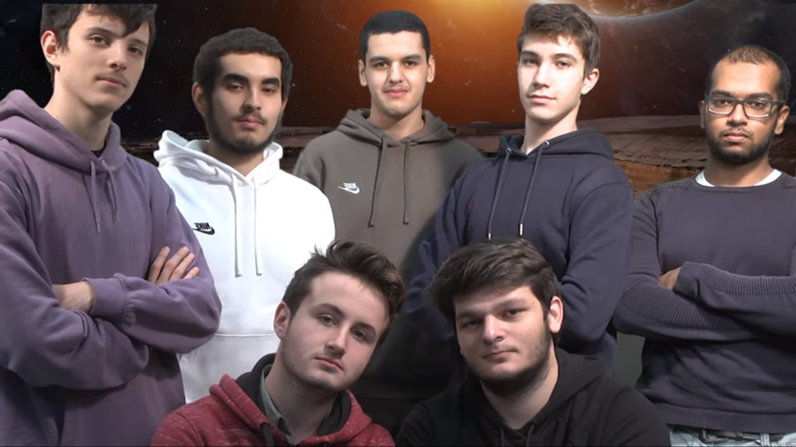

Septembre 2021, un objet non identifié se crash sur terre, en France, et plus précisément
à Vélizy, à côté de l’IUT. Une équipe de spécialiste ne tarde pas à arriver sur les lieux, afin d’amener
l’objet dans leurs laboratoires.
Après de longues heures de recherches, les scientifiques ont découvert que cet objet était en fait
un robot qui était probablement en orbite autour de la terre, et qui avait du heurter un objet , qui
avait fait dériver sa trajectoire, et amené droit sur la terre. En menant des recherches plus
approfondies, ils ont découvert des traces d’un matériau non identifié, mais dont les indices laissent
penser que c’est de la roche d’une autre planète, dont le plus probable serait la planète mars.
Voyant dans cet objet, une opportunité d’établir contact avec de potentiels martiens, l’état à décidé
d’envoyer le robot sur mars.
Le robot n’étant pas en état d’être envoyé directement dans l’espace, il fut décidé de réparer ce robot,
et même de l’améliorer afin de pouvoir le rendre à nouveau fonctionnel.
Il sera demandé à un groupe de 7 individus dotés de capacités particulières, de réparer le robot et de
le renvoyer sur mars.
La «mission redstone 3.1» voit ainsi le jour, elle réunit des spécialistes en robotique et en
électronique, qui tenteront le tout pour le tout afin d’accomplir la mission le mieux possible.
La mission ? Reconstruire le robot, afin qu’il puisse atteindre mars sans encombres et potentiellement y
établir un contact avec les éventuels habitants.
Pour cela, les matériaux recyclables seront préférables lors de la construction. Le robot devra être
capable de sortir du périmètre d’orbite de la terre sans dommages, afin de pouvoir arriver à sa destination en un
seul morceau. Pour cela, il devra être capable de détecter les obstacles présents sur son chemin, et les contourner.
Cette équipe sera-t-elle capable de mener à bien le projet ?
